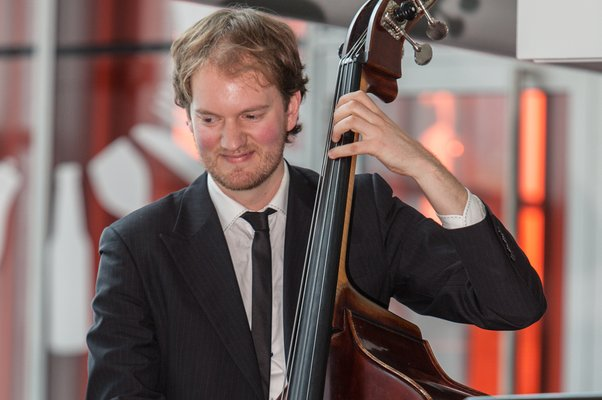

Robin de Zeeuw
Ik ben een freelance klassiek musicus uit Utrecht, ik ben 33 jaar oud en bespeel de contrabas en de viola da gamba. Ik heb gestudeerd aan het conservatorium van Utrecht en Amsterdam en ben al enkele jaren werkzaam in verscheidenen orkesten in Nederland.
De corona crisis heeft veel impact gehad op mijn werkzaamheden en omdat ik graag bezig ben leek het mij een mooie uitdaging om te leren coderen. Ik heb dit vroeger al een beetje gedaan (nog voor de tijd van flexboxen e.d.), maar wil het graag naar een professioneel level tillen, zodat ik dit naast mijn muzikale activiteiten kan inzetten.
